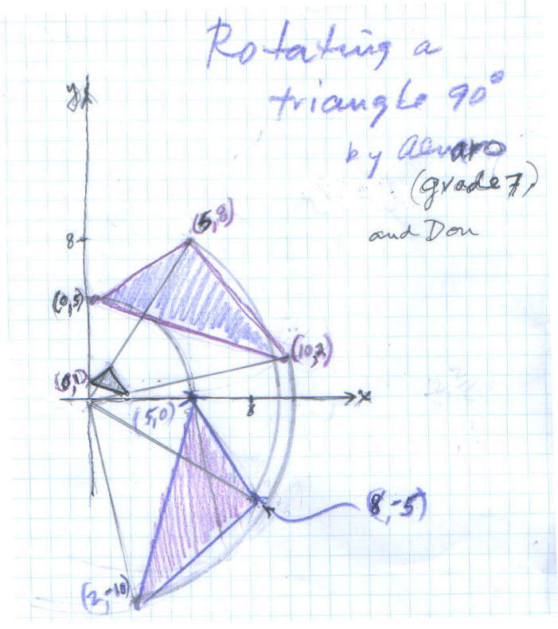
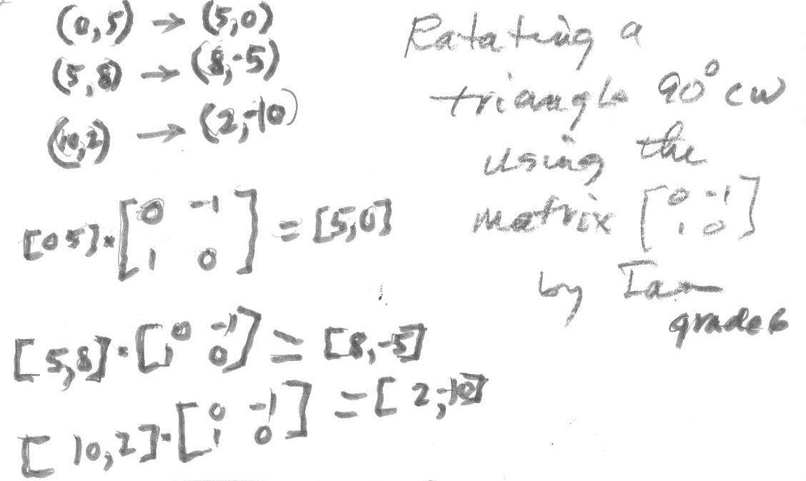

Two ways to rotate a triangle 90' CW
Alvaro, a 7th grader, was working on transformations of a cap in his textbook. He was changing the x- and y-coordinates of the original shape to get the new shape. Then he made a triangle 1/5 the coordinates of the original triangle whose vertices were (0,5), (5,8), and (10,2)- see below. The resulting small triangle in the diagram had vertices (0,1), (1,1.6) and (2,0.4). Notice the small triangle's vertices were each on a line from the original vertices to the origin.
Then Don asked Alvaro to rotate the original triangle 90' clockwise. Don worked with Alvaro using a compass to draw arcs with radii from the origin to each vertex. Then using a protractor they made 90' angles and drew lines to intersect the arcs to get the new vertices. These resultant vertices of the rotated triangle were very close to (5,0), (8,- 5) and (2,- 10).

While Don and Alvaro did this, Ian, a 6th grader, was listening and proceeded to do the rotation with a matrix below:

Ian's matrix acts like the complex number - i. Ian has been working on the problem of transforming a dog, using the 81-2x2 matrices (formed with only 0's, 1's and -1's as discussed in Don's book "Changing Shapes With Matrices").
Great job guys!!